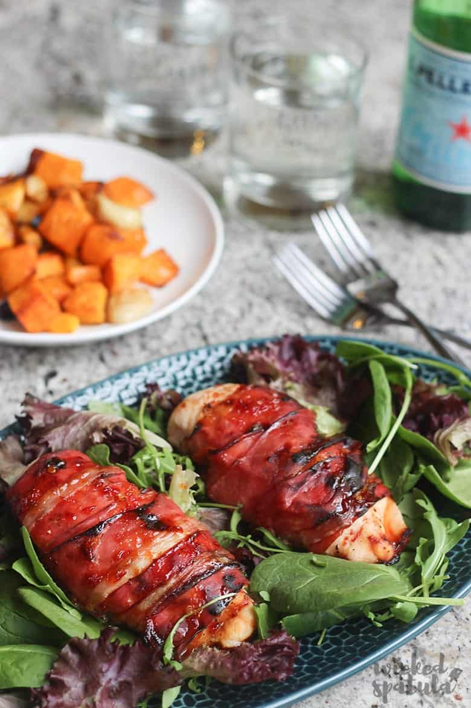

Prosciutto-Wrapped Chicken

Description
Chicken wrapped in Prosciutto, drizzled with honey and crushed red peppers; spiced to perfection. How can you say no?
Description
Firstly, if you have an extra 15 minutes, it's recommended to "Brine your Chicken"
- Brining
- Brining is typically a process in which meat is soaked in a salt water solution similar to marination before cooking.[2] Meat is soaked anywhere from 30 minutes to several days. The amount of time needed to brine depends on the size of the meat: more time is needed for a large turkey compared to a broiler fryer chicken. Similarly, a large roast must be brined longer than a thin cut of meat.
Ingredients
- 4 medium Chicken breasts (about 2 lbs)
- 12 slices of Prosciutto
- 2 tablespooons of Honey
- 1 tablespoon of crushed red peppers
- 2 cloves of garlic
- Sea salt
- Black Pepper
Steps
- Preheat oven to 400°f
- In a small bowl, stir together honey, chili flakes, and minced garlic
- Place the chicken into a baking dish, so that the chicken pieces don't touch. Season both sides with salt and paper. Place 1 teaspoon of the honey mixture on each breast.
- Wrap 3 pieces of prosciutto around each chicken breast and then place the remainder of the honey mixture over the top.
- Bake for 30-40 minutes, until chicken reaches at least 160 degrees F. Cover and let the chicken rest for about 5 minutes, until internal temperature reaches at least 165 degrees F.
Boomba! enjoy this easy a.f. recipe and impress your girlfriend!